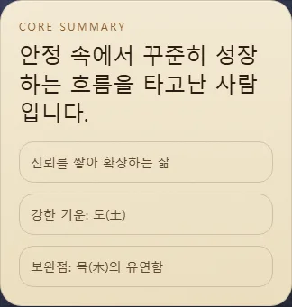
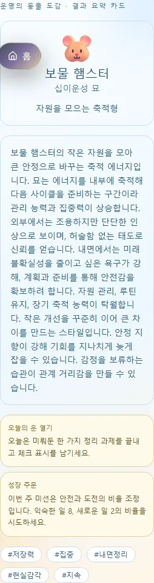

연이의 운명의 찻집말하지 못한 마음에도,차 한 잔의 자리를.연애와 재회, 일과 돈, 마음의 회복까지. 지금의 고민을 골라 연이에게 이야기를 건네 보세요. 고민이 먼저, 방식은 그다음당신에게 맞는 찻잔으로이야기를 시작해요.닫히지 않은 관계다시 연락할지, 기다릴지. 마음을 정리할 질문이 필요할 때.갈림길 앞의 선택일과 돈의 고민을 한 걸음씩 풀어 보고 싶을 때.나를 돌보는 시간이별과 지친 마음을 돌아보고 다음 선택을 찾고 싶을 때. 네 가지 상담 방식같은 고민도,다른 창으로 볼 수 있어요.01타로질문과 카드의 상징을 연결합니다. 3카드와 5카드 중 선택합니다.02사주나의 출생 정보를 바탕으로 기질과 흐름을 읽습니다.03사주 궁합두 사람의 사주를 함께 살펴 관계의 결을 읽습니다.04숙요두 사람의 출생 정보로 27숙 관계의 흐름을 살핍니다. 무슨 말을 꺼낼지부터함께 골라 볼까요?고민 주제 → 상담 방식 → 질문 입력 → 이용 조건 확인 → 결과 순서로 이어집니다. 필요한 출생 정보는 방식에 따라 다릅니다.내 고민에 맞는 찻잔 고르기
전문가 상담 · 인생의 책흩어져 있던 삶의 장면을,한 권의 흐름으로.타고난 사주와 시간의 흐름을 함께 읽으며, 나의 기질과 삶의 방향을 차분히 돌아보는 리포트입니다. 실제 결과 화면 미리보기긴 이야기 앞에,나를 설명하는 한 문장.한 줄 요약으로 전체 흐름을 잡고, 각 장에서 해석을 읽어 갑니다.개발용 fixture 예시 · 개인 결과 아님 단편적인 답보다내 삶의 맥락이 궁금할 때.기질을 이해하기타고난 사주의 원형을 바탕으로 자신을 돌아봅니다.시간의 흐름 읽기삶의 장면을 시간의 변화와 연결해 살펴봅니다.장별로 차근차근목차를 따라 필요한 내용을 나누어 읽습니다. 나의 첫 장을 열어 볼까요?출생 정보를 준비해 주세요. 이용 가능한 접근 방식과 가격은 기존 결제 화면에서 확인합니다.인생의 책 시작하기
무료 기능 · 사주 십이운성나를 움직이는 힘은어떤 동물을 닮았을까?사주의 십이운성, 열두 성장 단계를 동물의 상징으로 만나 보세요. 이름을 붙이는 재미를 넘어 나의 성향과 성장 방향을 읽습니다. 실제 결과 화면 미리보기나의 동물과 키워드,오늘 해 볼 작은 행동.대표 동물과 성향을 읽고, 오늘의 행동과 성장 미션까지 이어집니다.로컬 계산 예시 · 개인 결과 아님 동물 하나에서 시작해,나의 리듬까지.사주와 연결된 상징연·월·일·시의 십이운성을 살펴봅니다. 시간을 모르면 연·월·일 중심으로 읽습니다.열두 동물 도감다른 동물의 상징과 성장 단계를 함께 탐색합니다.두 사람의 궁합상대의 출생 정보로 두 동물의 관계를 비교합니다. 내 안의 동물을 만나 보세요.출생일은 필수이며 태어난 시간은 몰라도 시작할 수 있습니다.내 운명의 동물 찾기